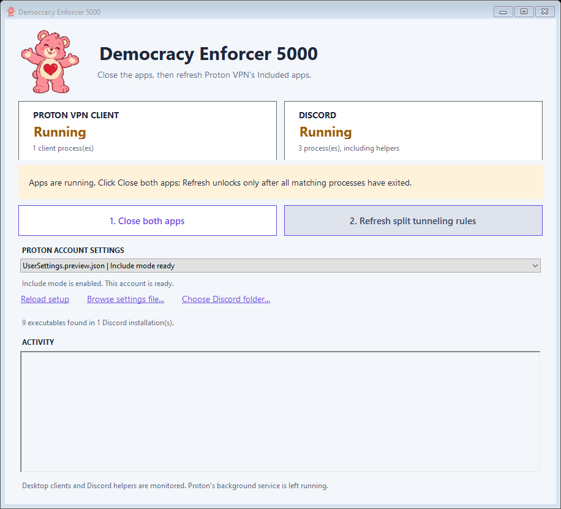

SHUTDOWN / VERIFY
Close both apps.
Close Discord and Proton’s desktop client. Helpers are checked too. If a process can’t be verified, Refresh stays locked.
BACKGROUND VPN SERVICE LEFT RUNNING♥ FOR DEMOCRACY. WITH LOVE.
Because Democracy is beautiful and we should break all the rules to defend it
New Discord version. New executable path. Same broken split tunneling. Put the right paths back in Proton VPN.

01 / A LITTLE CARE GOES A LONG WAY
Discord moves its executables between version folders. This utility finds the current paths and refreshes Proton’s Included apps, while preserving unrelated entries.
SHUTDOWN / VERIFY
Close Discord and Proton’s desktop client. Helpers are checked too. If a process can’t be verified, Refresh stays locked.
BACKGROUND VPN SERVICE LEFT RUNNINGSCAN / BACK UP / REPLACE
Enable Include mode and add current Discord executables. Remove stale paths and keep other Included apps. Each actual change gets an exact backup.
ALREADY CURRENT? NO WRITE. NO BACKUP.AUTOMATIC HANDOFF
Proton opens automatically after a successful refresh. Wait for its connection, then reopen Discord. Discord stays closed.
DISCORD / PTB / CANARYKNOW WHAT YOU’RE RUNNING
Once per Windows user, setup requests startup with Windows, auto-connect, Fastest country excluding Brazil, Proton WireGuard, and Split tunneling in Include mode. Exit Proton, select your account, then click Apply setup and open updater. Setup is required before first use and backs up changed files.
Read the first-launch details ↗02 / MADE FOR YOUR MACHINE
64-bit Windows, Windows PowerShell 5.1, and the .NET Framework 4.x C# compiler. No NuGet, npm, or Visual Studio project required.
Explore the repository ↗git clone https://github.com/Billy364/Anti-Janjanator-5000-repo.git Democracy-Enforcer-5000-repo
cd Democracy-Enforcer-5000-repo
powershell.exe -NoProfile -ExecutionPolicy Bypass -File .\build.ps1dist\Democracy-Enforcer-5000\Open Democracy Enforcer 5000.exe. Keep the entire folder together; the PowerShell workers must stay beside it. A portable ZIP is generated too.
// TRANSPARENCY Unofficial utility. Builds are unsigned. Synthetic tests cover settings preservation and process guards; they do not verify live VPN traffic routing. Proton controls feature availability.
USER GUIDE ↗